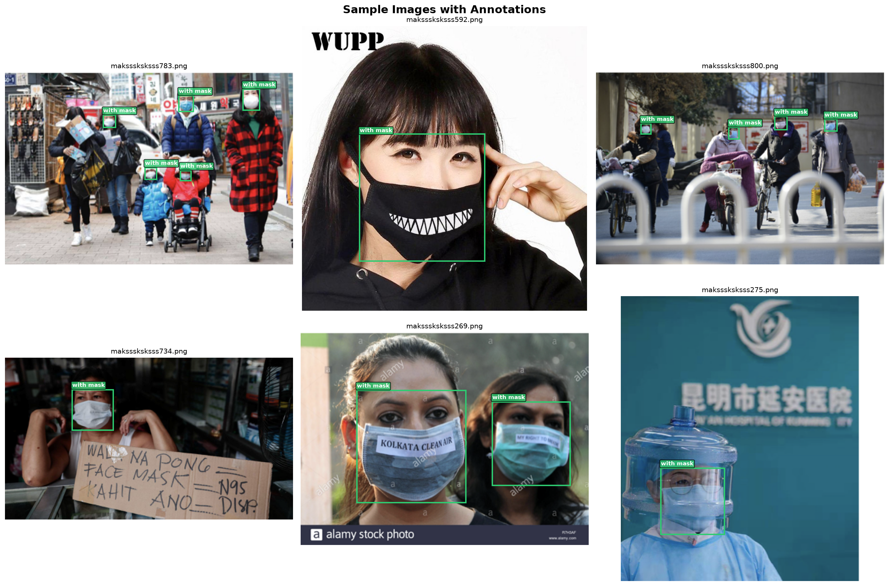
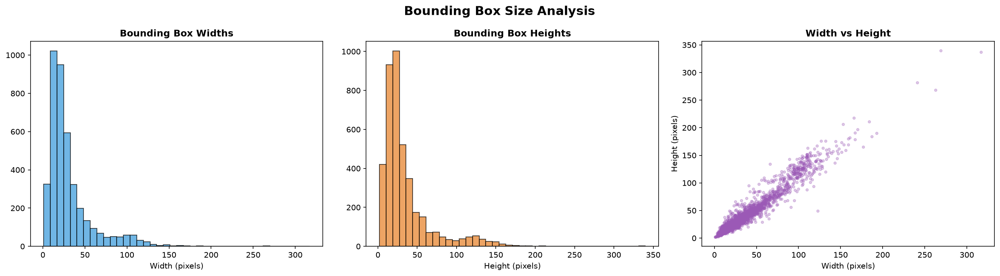
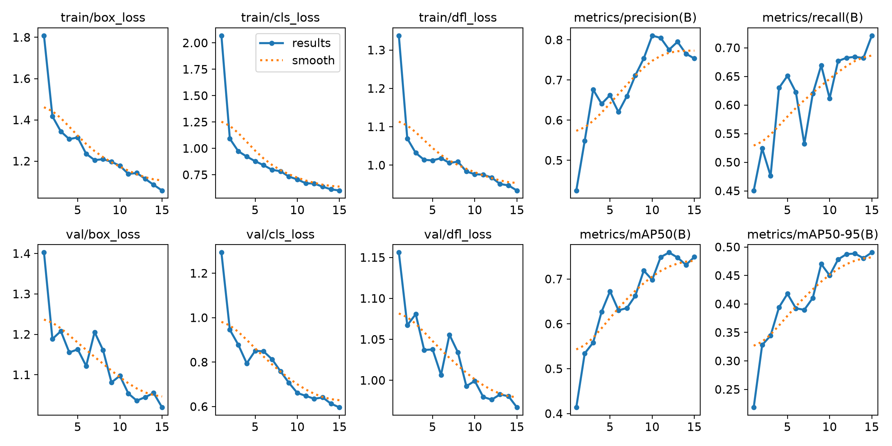
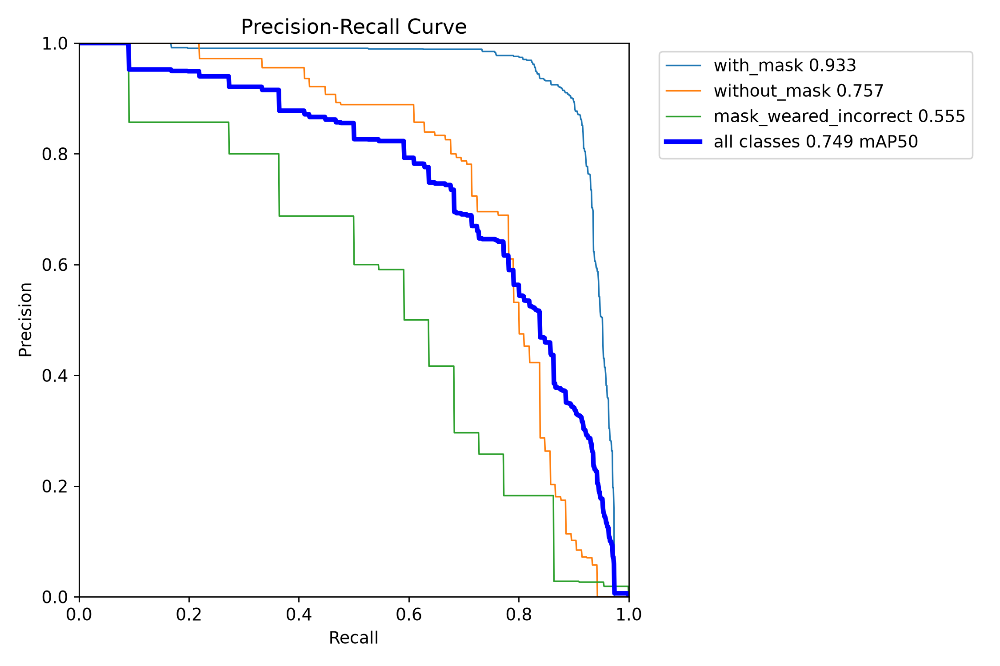
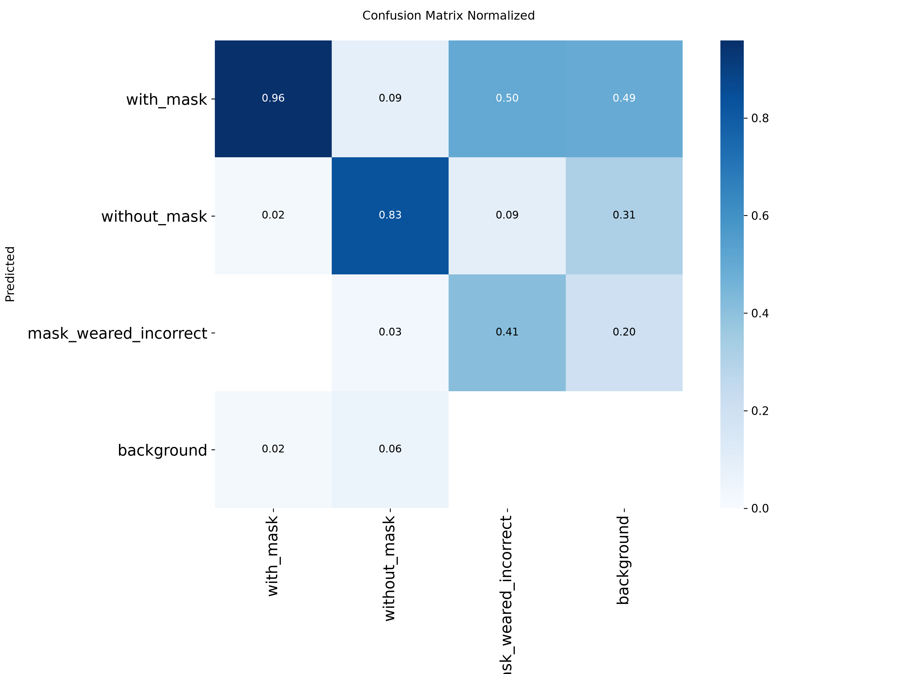
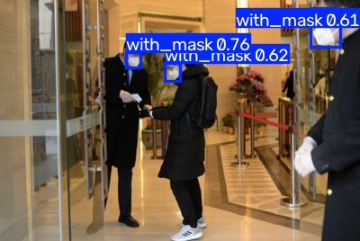
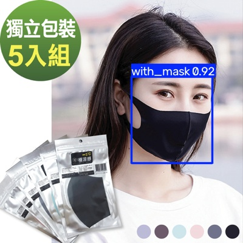
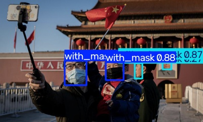
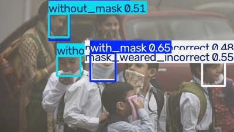

Detecção de Máscaras Faciais com YOLOv8 e Deep Learning
Seminário — Novembro 2026
1Detecção automática do uso de máscaras faciais em imagens, classificando cada rosto detectado em 3 categorias:
Object Detection (Detecção de Objetos)
Diferente de classificação simples: o modelo precisa localizar cada rosto (bounding box) e classificar simultaneamente. Uma imagem pode conter múltiplas pessoas com classes diferentes.
Treinar um modelo YOLOv8 com transfer learning para detectar e classificar o uso de máscara em tempo real, avaliando desempenho com métricas de detecção (mAP, precision, recall).
| Split | Imagens | Proporção |
|---|---|---|
| Treino | 682 | 80% |
| Validação | 171 | 20% |
⚠ Desbalanceamento: A classe mask_weared_incorrect tem apenas 123 amostras (3%). Isso impacta diretamente o desempenho do modelo nessa classe.


| Parâmetro | Valor |
|---|---|
| Modelo base | YOLOv8n (Nano) |
| Pesos iniciais | COCO pre-trained |
| Epochs | 15 |
| Image size | 416 × 416 |
| Batch size | 8 |
| Optimizer | AdamW (lr=0.00143) |
| Early stopping | patience = 5 |
| Hardware | CPU (Ryzen 5 5600) |
mAP@0.5 — Mean Average Precision com IoU ≥ 50%
Principal métrica para detecção de objetos
mAP@0.5:0.95 — Média em múltiplos limiares IoU
Métrica mais rigorosa (IoU de 50% a 95%)
Precision / Recall
Precisão das detecções e cobertura dos objetos
Confusion Matrix
Erros entre classes e falsos positivos/negativos
Detector de objetos single-stage: localiza e classifica em uma única passada pela rede.
| Componente | Função |
|---|---|
| Backbone | Extrai features (bordas, texturas, formas) |
| C2f blocks | Cross-stage partial — features multi-escala |
| SPPF | Pooling espacial em diferentes escalas |
| Neck (FPN) | Funde features de alta e baixa resolução |
| Head | Prediz boxes + classes em 3 escalas |

Transfer Learning — 349 camadas pré-treinadas (COCO, 330K imgs)
Data Augmentation — Mosaic, flip, scale (±50%), HSV, erasing (40%)
Early Stopping — patience=5 epochs sem melhoria
| Classe | Precision | Recall | AP@0.5 |
|---|---|---|---|
| ● with_mask | 0.890 | 0.901 | 0.932 |
| ● without_mask | 0.791 | 0.686 | 0.751 |
| ● mask_incorrect | 0.604 | 0.556 | 0.552 |


with_mask: 96% acerto
Excelente — quase sem confusão
without_mask: 83% acerto
9% confundido com with_mask (rosto parcialmente coberto)
mask_incorrect: 41% acerto
50% confundido com with_mask — visualmente muito similares
Principal causa de erro:
Máscara incorreta (abaixo do nariz) é visualmente muito parecida com máscara correta, e a classe tem poucas amostras (123 vs 3.232).

✔ Múltiplas masks detectadas

✔ Confiança alta (0.92)

✔ Cena com crowd

✔ 3 classes na mesma cena
1. Oversampling — Aumentar amostras de mask_incorrect com augmentation específico
2. GPU Training — Mais epochs (50-100), resolução 640px, modelo YOLOv8s
3. Focal Loss — Peso maior para classes raras durante treinamento
4. Mais dados — Coletar imagens adicionais de mask_incorrect
5. Detecção em vídeo — Aplicar em stream de câmera em tempo real